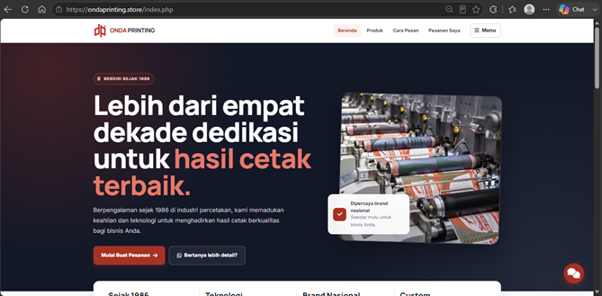
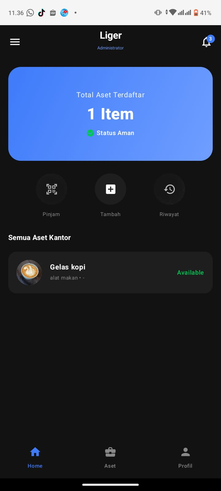
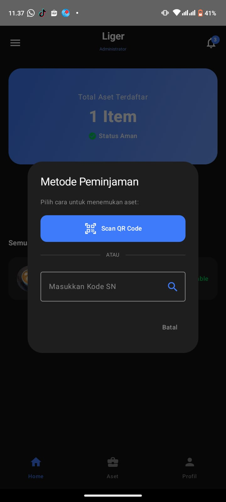
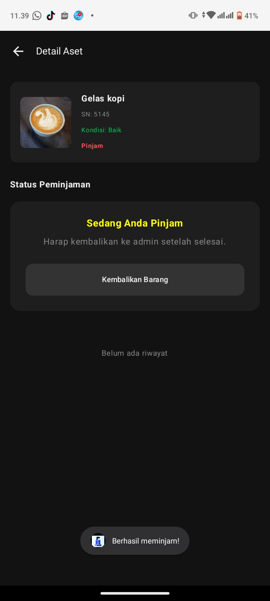
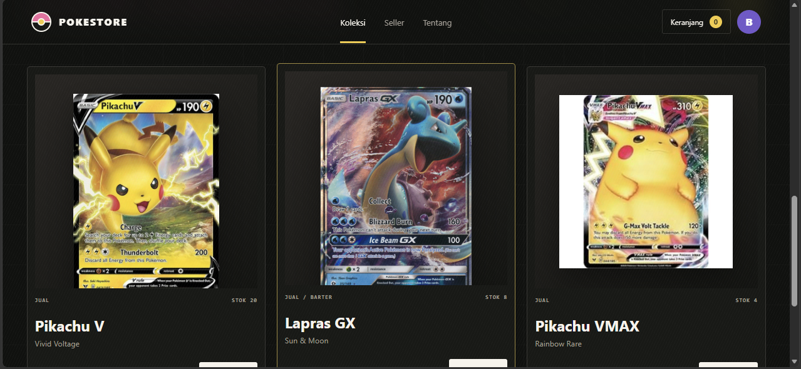
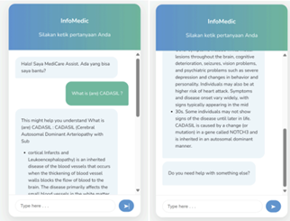

Portopolio
WEB DEVELOPER · JAKARTA
BENAYA ARLEN
Saya merancang dan mengembangkan website, serta aplikasi yang mudah digunakan dalam kebutuhan bisnis dari antarmuka hingga database.
Scroll di globe untuk zoom · tarik ke samping untuk memutar 360°
PORTOFOLIO INTERAKTIFSCROLL · DRAG · HOVER
01
TENTANG SAYA
JAKARTA, INDONESIA
Tentang Saya
Fokus saya adalah menerjemahkan kebutuhan pengguna menjadi solusi digital yang nyata. Saya memiliki dorongan yang kuat untuk terus belajar, menyerap ilmu baru, dan beradaptasi dengan teknologi terkini. Dari merancang antarmuka hingga mengintegrasikan database, saya selalu antusias menghadapi tantangan. Saya siap berkolaborasi, menerima feedback, dan berkembang bersama tim untuk menciptakan solusi digital yang lebih baik setiap harinya.
- PENDIDIKAN
- Informatika, UKRIDA
- DOMISILI
- Jakarta
- BAHASA
- Indonesia · English
Keahlian
Teknologi yang saya gunakan
Web
PHP

HTML

CSS

JavaScript

Data & AI
MySQL

Python

Rasa

Tools
Visual Studio Code

Android Studio
XML
Figma

Canva

CapCut
02
PROYEK SAYA
PROYEK YANG DIBUAT
>
PROYEK PERUSAHAAN
/01

JAN 2026 — SEKARANGWebsite perusahaan & sistem pemesanan
PT Onda Printing
Mengembangkan dan memelihara website perusahaan dengan alur pemesanan terintegrasi, katalog produk, serta pengelolaan data berbasis MySQL.
- PHP
- HTML
- CSS
- JavaScript
- MySQL
>
PROYEK AKADEMIK
PROYEK KAMPUS



Asset Monitoring · Aplikasi mobile
ASMON
Aplikasi mobile untuk mencatat dan memantau aset, memeriksa kondisi serta ketersediaan barang, dan mengelola peminjaman melalui QR Code atau nomor seri. Sistem menyediakan alur berbeda untuk administrator dan pengguna.
- Mobile Application
- QR Code
- Asset Tracking
- Role-based Access
PROYEK KAMPUS

Marketplace kartu Pokémon · Website
PokeStore
Website marketplace kartu Pokémon untuk mendukung proses jual, beli, dan barter. Fitur utamanya mencakup katalog dan pencarian produk, profil penjual, penambahan stok, proses checkout, pilihan pembayaran, serta ringkasan penjualan.
- PHP
- HTML
- CSS
- JavaScript
SEP 2024 — 2025

Prototipe medical chatbot
InfoMedic
Membangun prototipe chatbot informasi kesehatan menggunakan Rasa dan Python, dilengkapi dataset tanya-jawab medis serta antarmuka percakapan interaktif.
- Python
- Rasa
- NLP
- VS Code
03
KEAHLIAN
TOOLS &
TECH
STACK.
Web Development
PHP · HTML · CSS · JavaScript
Database
MySQL · Perancangan data
AI & Programming
Python · Rasa · XML
Design & Tools
Figma · Canva · VS Code · Android Studio
04
JEJAK PERJALANAN
PENGALAMAN &
PENDIDIKAN.
JAN 2026 — SEKARANG
WEB DEVELOPMENT
PT Onda Printing
Pengembangan website, sistem pemesanan, dan pemeliharaan fitur.SEP 2023 — 2024
MEDIA TEAM
BEM FTIK UKRIDA
Dokumentasi kegiatan, editing konten, dan pembuatan aset visual.2022 — SEKARANG
S1 INFORMATIKA
Universitas Kristen Krida Wacana
Mempelajari pengembangan perangkat lunak, data, dan teknologi informasi.2019 — 2022
JURUSAN IPA
SMA Makarios
Landasan pendidikan sains sebelum melanjutkan studi Informatika.TERBUKA UNTUK BERDISKUSI